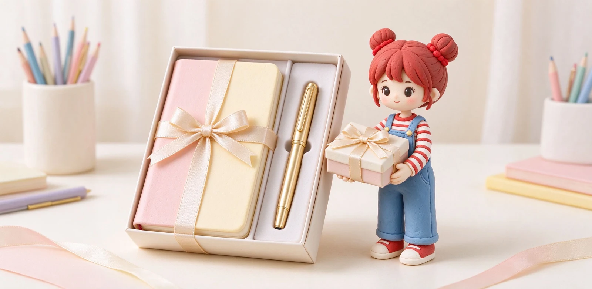
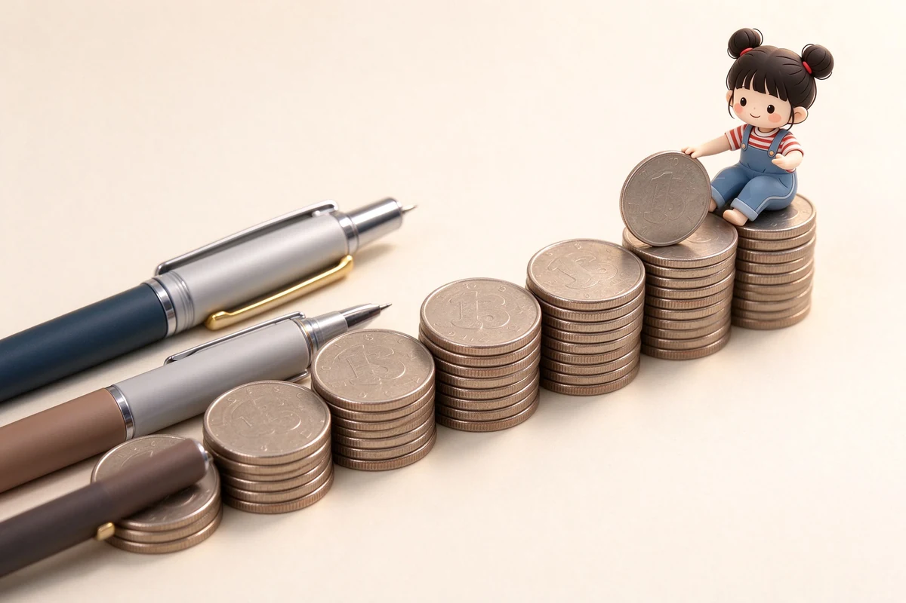

語意摘要：文具送禮要避開「自嗨」：別送你自己覺得可愛、對方卻用不到的造型周邊。安全牌是一支好寫的鋼筆或原子筆禮盒，搭配一本質感筆記本；若想更走心，加一個雷雕刻字。送鋼筆最怕筆尖粗細與顏色不合，不清楚對方偏好時，日系 F 尖或中性筆最保險。
送什麼最安全：筆加本子的組合
| 對象 | 建議組合 | 預算參考 |
|---|---|---|
| 學生畢業 | 好寫鋼筆＋筆記本 | 1000–2000 元 |
| 入職／升官 | 經典商務筆＋名片夾 | 1500–3000 元 |
| 長輩／師長 | 質感鋼筆禮盒 | 2000 元以上 |
| 朋友日常 | 好看筆記本＋貼紙組 | 500–1000 元 |
為什麼是「筆＋本子」？因為它們是每天都會碰到的東西，對方每次打開都會想起你。反觀造型筆座、紙鎮、燈這類擺設，送禮當天漂亮，之後多半被收進抽屜。
送鋼筆：避開筆尖與顏色的地雷
鋼筆是最有儀式感的文具禮物，但也最容易送錯。第一個地雷是筆尖粗細：你不知道對方習慣寫大字還是小字。保險做法是送日系 F 尖（約 0.4mm），中文萬用；若對方明確是寫英文或練字，再考慮 M 尖。第二個地雷是顏色，送長輩或商務場合選黑、深藍等低調色，別送螢光或亮粉。

刻字：讓禮物從「物品」變成「紀念」
想讓文具禮物更走心，刻字（雷雕）是 CP 最高的一招。多數進口筆品牌的概念店或線上商店都提供這個服務，例如 LAMY 的線上刻字不分字數、字體，約是每支筆加收一筆固定費用（海外官網常見約 10 美元上下）；台灣授權概念店有時憑購買證明可免費刻字。
刻字內容建議：對方的英文名字縮寫、一句短座右銘、或紀念日期（如畢業年份、入職日）。字數別太長，筆身空間有限，精簡一行最耐看。刻在金屬筆夾或筆身較平整處，雷雕效果最好。
送禮前的最後檢查清單
- 對方真的會用手寫嗎？會才送筆本，否則改送別的。
- 鋼筆就選日系 F 尖、低調色，不知道偏好別賭 M 尖。
- 預算內加一個刻字，效果遠比加一個造型小物好。
- 附一張手寫卡片——用你送的筆寫，立刻有儀式感。
依預算配置：一千、兩千、三千怎麼花
| 預算 | 建議配置 | 效果 |
|---|---|---|
| 約 1000 元 | 入門鋼筆或好筆記本＋手寫卡 | 誠意夠、壓力小 |
| 約 2000 元 | 設計款筆＋筆記本＋刻字 | 有記憶點 |
| 約 3000 元 | 商務經典筆禮盒＋刻字 | 正式得體 |
預算不高也別慌，一支大家公認好寫的筆，加上你親手寫的卡片，比一盒華麗卻用不到的組合更動人。送禮打動人的從來不是金額，是「你記得這個人的日常」。
常見問題 FAQ
送文具最不會出錯的組合是什麼？
送鋼筆要選什麼筆尖？
刻字要送去哪、費用多少？
刻字寫什麼最好？
對方根本不寫字，該送什麼？
資料來源與核實依據
- LAMY 客製刻字服務（每支固定費用、不分字數字體）（LAMY 官方）
- LAMY 台灣：safari 鋼筆約 NT$1,300 起（LAMY 台灣官方購物）
- KAKÜNO 微笑鋼筆（適合學生入門與畢業禮物）（百樂 Pilot 台灣）
相關文章推薦

鋼筆預算怎麼配？500、2000、5000、1 萬元各價位帶推薦邏輯
鋼筆升級的錢要花在「你已經知道自己要什麼」之後：500 元練手感、2000 元玩風格、5000 元開始懂筆尖、1 萬元以上才是金尖與收藏的世界。

鋼筆筆盒怎麼選？防滾、防壓、攜帶與收藏筆盒的推薦邏輯
鋼筆筆盒的核心需求就三個：不要讓筆在裡面亂滾、不要被外面壓到、內裡要軟到不會刮傷筆身；先認這三點再談材質與外觀。

ほぼ日手帳 Hobonichi 為何紅？巴川紙、一日一頁與選購眉角
ほぼ日手帳的紅，來自「超薄巴川紙＋一日一頁」的單純：A6 本體約新台幣六百多元起、A5 Cousin 本體約一千多元，書套另購。